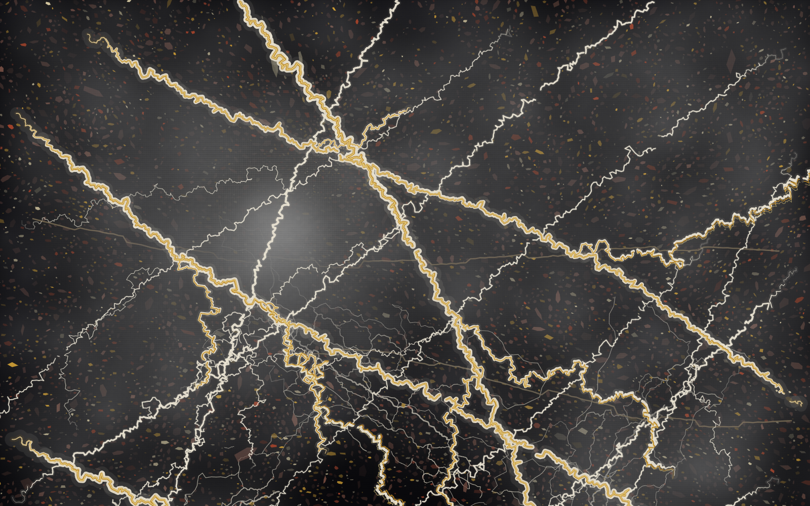
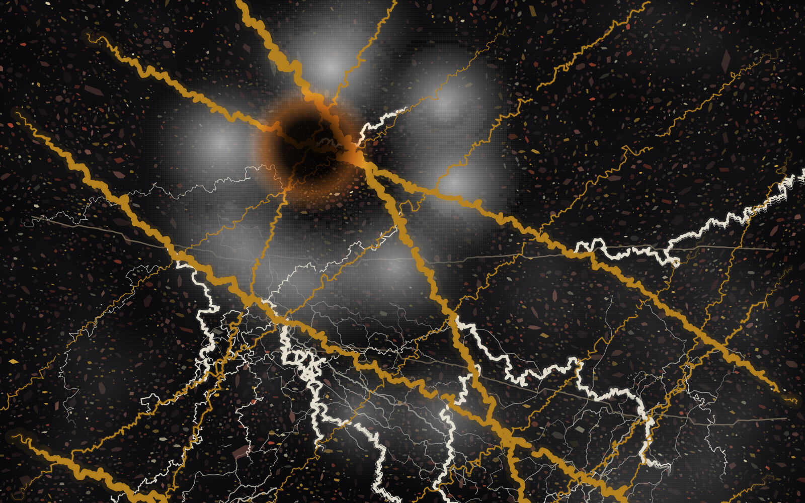
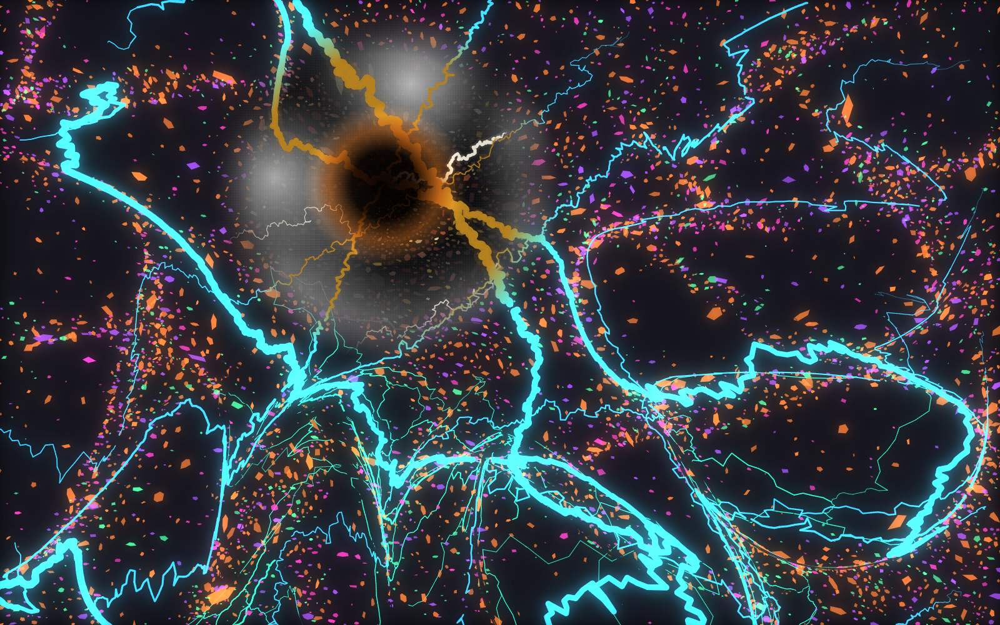

Stone Author · sample slab
One authored marble slab, shown three ways — pristine, subtly wrong, and screaming.
Stone Author draws stone as vector geometry, not pixels: veins, specks, fog and warp are a
few thousand simple shapes driven by a small recipe. The recipe — a .json slab — is the master,
and the render is a deterministic function of it: the same slab produces the same image, byte for byte, at any
resolution. These three heroes came off two slabs (below), rendered up to 168 megapixels.

The married gold-and-white fracture network on near-black granite, exactly as authored. The base state the other two happen to.

The same stone warped about 1.5% and scorched at the junction. Nothing you can point to, but the eye knows the veins don't quite land where they should.
Daylight and psyker are the same slab. One authored geometry, two lights: at rest it's near-true; under the other spectrum the full distortion it was always carrying is exposed.

The same slab at full warp, recolored into emission: gold veins fire electric cyan, the granite scatters in neon. The burn holds as an island of normalcy — a window where the warp never reached, so real daylight stone shows through the screaming.